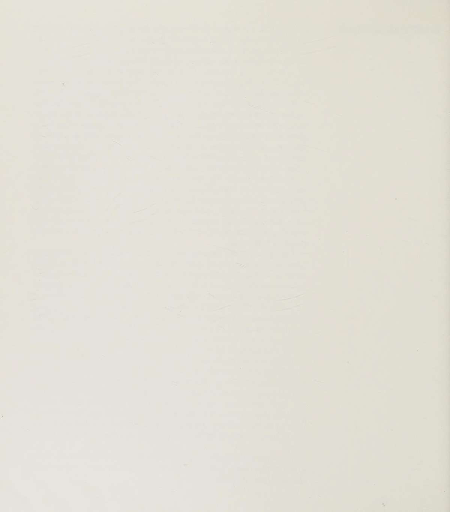
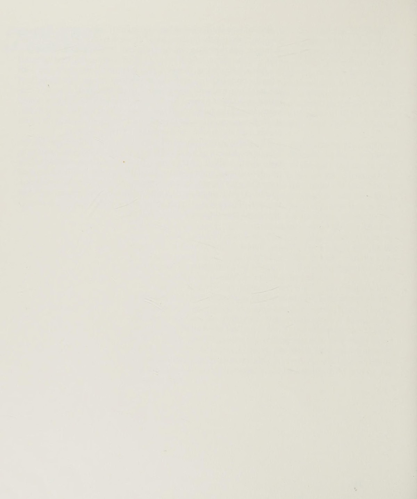
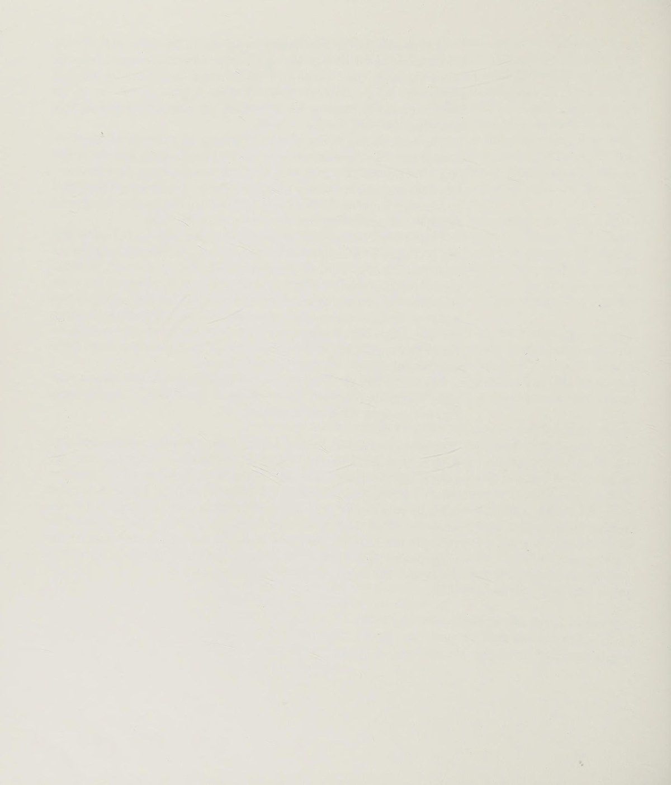
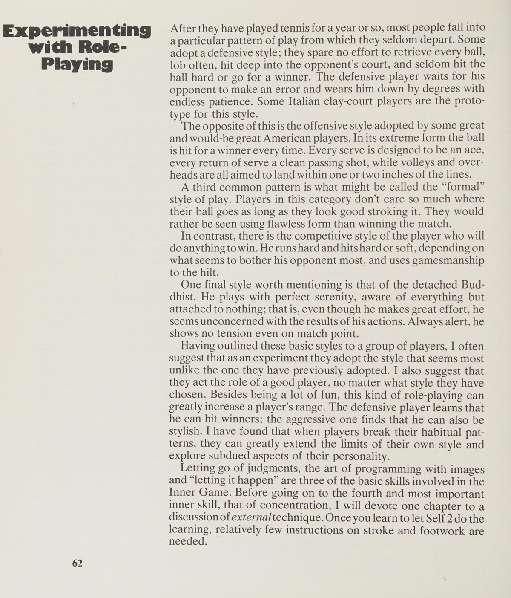
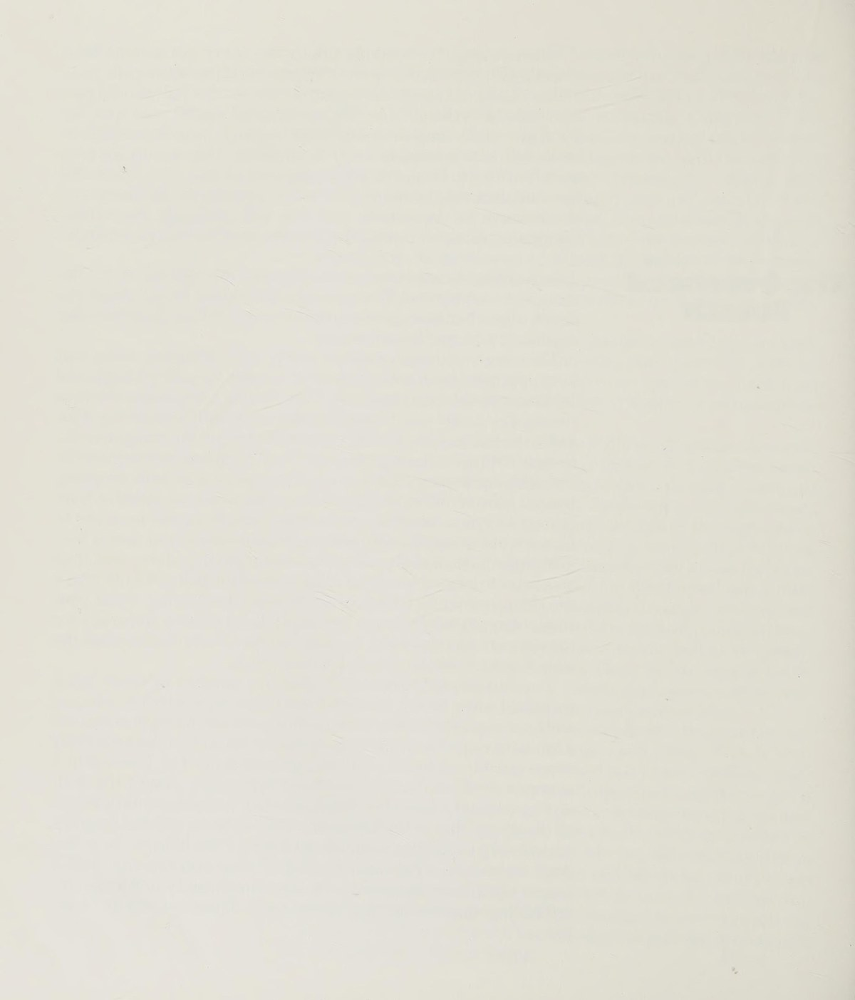
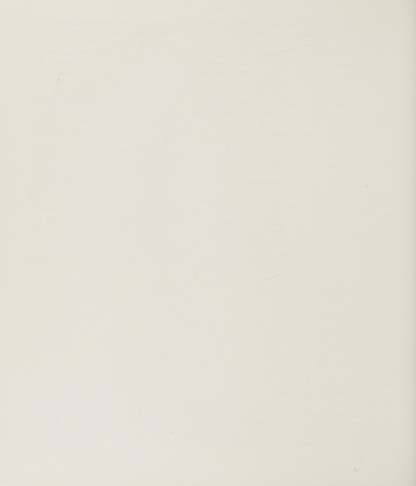
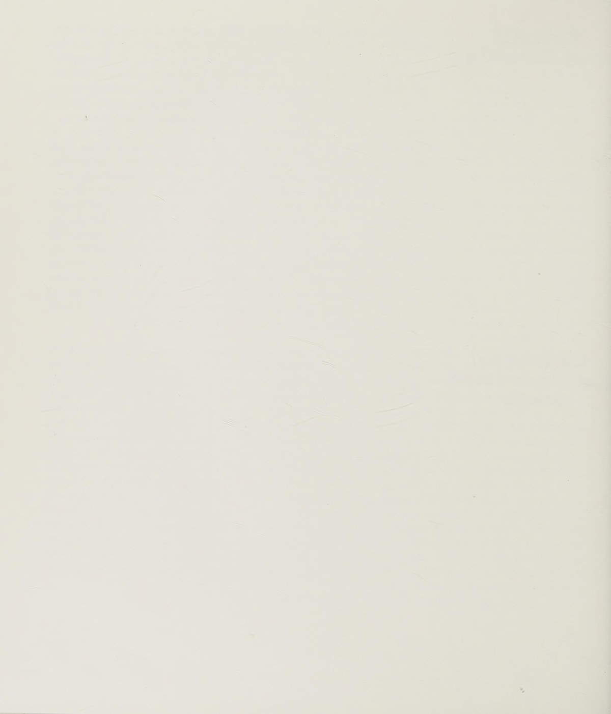
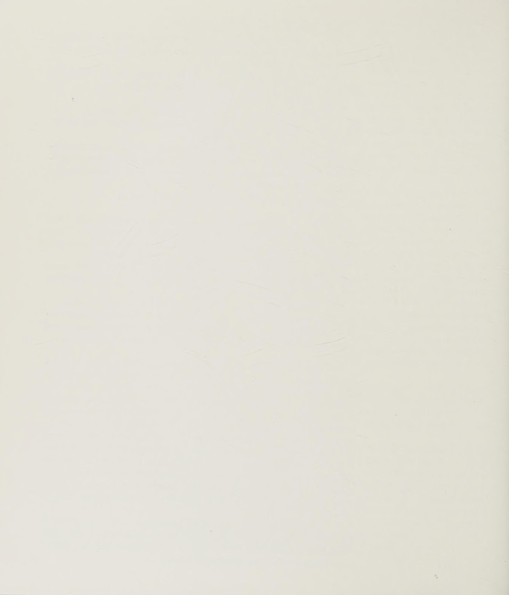

Phần I: Khám Phá Hai Cái Tôi & Nghệ Thuật Làm Dịu Tâm Trí (The Two Selves)
Khám phá tâm lý học kinh điển của W. Timothy Gallwey: Sự phân tách giữa Cái tôi phán xét (Self 1) và Cái tôi tiềm thức hành động (Self 2), cùng bí quyết buông bỏ kiểm soát để đạt trạng thái xuất thần

1. Trận Chiến Nội Tâm: Ai Đang Nói Chuyện Với Ai?
Bất kỳ ai từng cầm vợt ra sân đều quá quen thuộc với màn độc thoại nội tâm kỳ quặc này:
Sau một cú đánh bóng rúc lưới, người chơi tự gắt gỏng với chính mình: "Đồ ngốc, sao mày lại mở vợt trễ như thế?", "Nhìn vào quả bóng đi chứ!".
Timothy Gallwey đặt ra một câu hỏi mang tính cách mạng cho toàn bộ nền tâm lý học thể thao hiện đại: Trong khoảnh khắc đó, ai đang nói chuyện với ai?
Rõ ràng trong mỗi chúng ta luôn tồn tại hai thực thể tách biệt:
Thực thể thứ nhất là "Cái tôi 1" (Self 1) — tiếng nói phân tích, chỉ trích, phán xét và luôn cố gắng chỉ đạo cơ thể bằng những mệnh lệnh lý trí căng thẳng.
Thực thể thứ hai là "Cái tôi 2" (Self 2) — chính là cơ thể vật lý, hệ thần kinh tiềm thức và toàn bộ các mạng lưới nơ-ron điều khiển cơ bắp vô cùng tinh vi mà bạn được tạo hóa ban tặng.
Bi kịch lớn nhất của người chơi quần vợt là Self 1 không hề tin tưởng Self 2.
Self 1 luôn ảo tưởng rằng nếu nó không liên tục lải nhải nhắc nhở cơ thể phải bước chân nào, xoay vai góc bao nhiêu độ, thì cú đánh sẽ biến thành thảm họa.
Chính sự can thiệp thô bạo và nghi ngờ này của Self 1 làm căng cứng các nhóm cơ bắp, phá vỡ nhịp điệu tự nhiên và trực tiếp gây ra những sai lầm mà nó luôn lo sợ.

2. Làm Dịu Tiếng Nói Phán Xét (Quieting Self 1)
Bước đột phá đầu tiên trên con đường làm chủ Inner Game là việc bạn phải học cách bịt miệng Cái tôi 1 mà không cần phải dùng bạo lực tâm trí để chống lại nó.
Bản chất của Self 1 là thói quen nghiện dán nhãn: Nó lập tức phân loại mọi cú đánh thành "tốt" hoặc "xấu".
Khi bạn đánh một cú bóng rúc lưới và Self 1 gầm lên "Tệ hại quá!", một chuỗi phản ứng cảm xúc tiêu cực gồm giận dữ, lo lắng và tự ti sẽ bùng nổ, kéo theo sự co thắt của các cơ bắp quanh cổ và vai.
Giải pháp của Gallwey là rèn luyện Sự nhận biết không phán xét (Non-judgmental awareness):
Hãy nhìn nhận quả bóng rúc lưới đơn giản như một sự kiện vật lý khách quan — quả bóng bay thấp hơn mép lưới năm centimet, không hơn không kém.
Đừng gán ghép phẩm giá hay tài năng của bản thân vào kết quả của một đường bóng.
Khi bạn nhìn nhận sự việc đúng như bản chất thực của nó mà không phán xét, Self 2 sẽ tự động tiếp nhận dữ liệu thị giác một cách trong sáng và tự điều chỉnh đường vung vợt trong cú đánh tiếp theo mà không cần bất kỳ sự can thiệp căng thẳng nào từ Self 1.
3. Hãy Để Mọi Thứ Tự Diễn Ra (Letting It Happen)
Có một sự khác biệt sâu sắc giữa việc "Cố gắng làm cho nó xảy ra" (Making it happen) và "Để nó tự nhiên diễn ra" (Letting it happen).
Khi bạn "cố gắng" đánh một cú thuận tay thật mạnh, Self 1 đang gồng mình chỉ đạo, siết chặt các khớp xương và tiêu tốn năng lượng một cách vô ích.
Ngược lại, khi bạn "để nó tự diễn ra", bạn trao trọn niềm tin cho Self 2 — hệ thống tiềm thức đã từng học cách bò, cách đi đứng và giữ thăng bằng từ khi bạn còn là một đứa trẻ mà không cần bất kỳ cuốn sách hướng dẫn lý thuyết nào.
Self 2 ghi nhớ chuyển động bằng cảm giác cơ học và hình ảnh không gian.
Hãy buông bỏ sự kiểm soát của cái tôi kiêu ngạo, thả lỏng đôi vai, hít một hơi thở sâu và để cho cơ thể bạn tự do khiêu vũ cùng trái bóng.
Đó chính là khoảnh khắc bạn bước chân vào trạng thái thăng hoa tột độ (The Zone).

Phần II: Lập Trình Tiềm Thức Bằng Hình Ảnh & Thay Đổi Thói Quen (Programming Self 2)
Bí quyết giao tiếp với Cái tôi tiềm thức thông qua ngôn ngữ hình ảnh và cảm giác chuyển động; phương pháp bốn bước thay đổi thói quen kỹ thuật mà không cần dùng ý chí gượng ép
4. Giao Tiếp Bằng Hình Ảnh Trực Quan Thay Vì Mệnh Lệnh Khô Cứng
Cái tôi 2 không hiểu và không phản hồi tốt trước những câu khẩu lệnh dài dòng của ngôn ngữ logic.
Ngôn ngữ mẹ đẻ của Self 2 là hình ảnh thị giác (Visual imagery) và cảm giác bản thể (Kinesthetic sensation).
Thay vì tự nhủ trong đầu: "Mình phải gập đầu gối xuống và vung vợt từ thấp lên cao một góc bốn mươi lăm độ", hãy nhắm mắt lại trong vài giây trước khi phát bóng hoặc đánh trả:
Hãy mường tượng một bức tranh sống động trong tâm trí về đường cong hoàn mỹ của quỹ đạo bóng, cảm nhận trong cơ bắp sự mềm mại của cú vung vợt và điểm tiếp xúc ngọt ngào ngay giữa tâm mặt lưới.
Một khi hình ảnh rõ nét đó được truyền tải tới Self 2, cơ thể bạn sẽ tự động kích hoạt hàng triệu sợi cơ bắp phối hợp với nhau để tái hiện chính xác bức tranh đó trên thực tế.
Hãy học tập cách một đứa trẻ học nói hay học bơi: Chúng không đọc sách ngữ pháp hay giải phẫu học; chúng chỉ đơn giản quan sát hình mẫu và để tiềm thức tự động mô phỏng lại một cách kỳ diệu.

5. Bốn Bước Thay Đổi Thói Quen Kỹ Thuật Mà Không Cần Gượng Ép
Hầu hết mọi người cố gắng sửa đổi một thói quen đánh bóng xấu bằng cách gồng mình "chiến đấu" chống lại nó; cách tiếp cận này chỉ tạo thêm căng thẳng và sự ức chế.
Gallwey đưa ra quy trình bốn bước thanh thản để chuyển hóa bất kỳ động tác kỹ thuật nào:
Bước 1: Quan sát chuyển động hiện tại mà không phán xét.
Hãy thực hiện cú đánh và chỉ đơn giản cảm nhận xem cây vợt đang đi đâu, cổ tay đang ở vị trí nào, không tự trách móc hay xấu hổ.
Bước 2: Hình dung rõ nét kết quả mong muốn.
Tự vẽ ra trong đầu hình ảnh chuẩn mực của cú đánh mới — xem lại video của một thần tượng bạn ngưỡng mộ hoặc hình dung quỹ đạo bóng lý tưởng.
Bước 3: Tin tưởng tuyệt đối và để nó tự diễn ra.
Đừng cố gắng dùng sức để "ép" cơ thể phải làm đúng; hãy giao phó hoàn toàn nhiệm vụ cho Self 2 và để cơ thể tự do khám phá cách thực hiện.
Bước 4: Quan sát sự biến chuyển với lòng hiếu kỳ vô tư.
Quan sát cảm giác mới mẻ của cú đánh vừa thực hiện mà không vội vàng ăn mừng hay thất vọng; thói quen cũ sẽ tự động tan biến một cách tự nhiên như một chiếc lá vàng rụng xuống để nhường chỗ cho mầm xanh mới.
6. Căn Chỉnh Rãnh Tiềm Thức (Grooving the Strokes)
Mỗi lần bạn thực hiện một cú đánh lặp đi lặp lại trong trạng thái thư giãn và tập trung cao độ, một "rãnh mòn thần kinh" (Groove) được khắc sâu vào hệ thần kinh của Self 2.
Càng ít có sự can thiệp và hoài nghi của Self 1, rãnh mòn đó càng trở nên mượt mà và sâu sắc.
Khi bước vào những trận đấu căng thẳng nghẹt thở, những rãnh mòn tiềm thức này sẽ tự động vận hành một cách hoàn hảo, giúp bạn tung ra những cú đánh sắc bén mà không cần phải suy nghĩ.

Phần III: Nghệ Thuật Tập Trung Tột Đỉnh & Trạng Thái Dòng Chảy (Concentration & Flow)
Phương pháp neo giữ tâm trí vào thực tại hiện tiền: Nhìn vào đường chỉ khâu của quả bóng nỉ, lắng nghe âm thanh tiếp xúc và kích hoạt trạng thái xuất thần (Flow State)
7. Neo Giữ Tâm Trí: Đọc Đường Chỉ Khâu Trên Quả Bóng
Bảo một người chơi "Hãy tập trung!" cũng vô ích như việc bảo một kẻ đang mất ngủ "Hãy ngủ đi!".
Tâm trí con người không thể bị ép buộc đứng yên; nó cần một đối tượng cụ thể và hấp dẫn để neo đậu vào đó.
Bí quyết tập trung đỉnh cao của Gallwey là hướng toàn bộ sự chú ý của thị giác vào những chi tiết vi mô của trái bóng:
Thay vì chỉ nhìn quả bóng một cách mơ hồ như một vệt màu vàng bay qua bay lại, hãy tập trung ánh nhìn vào đường chỉ khâu uốn lượn (Seams of the ball) trên quả bóng nỉ.
Hãy quan sát xem đường chỉ khâu đang xoay tròn theo chiều nào, xoay nhanh hay xoay chậm khi bóng rời mặt vợt đối phương và bay qua lưới.
Khi tâm trí bạn hoàn toàn bị cuốn hút vào việc đọc đường chỉ khâu của quả bóng, Cái tôi 1 sẽ không còn bất kỳ khoảng trống hay năng lượng nào để lải nhải những suy nghĩ lo âu về tỷ số hay nỗi sợ đánh hỏng.
Bạn hòa nhập trọn vẹn vào khoảnh khắc thực tại bây giờ và ở đây.

8. Lắng Nghe Âm Thanh Chạm Bóng & Cảm Nhận Thăng Bằng
Sự tập trung không chỉ giới hạn ở đôi mắt; nó đòi hỏi sự tham gia đồng điệu của mọi giác quan trên cơ thể:
Lắng nghe âm thanh va chạm:
Mỗi cú đánh đều phát ra một âm thanh đặc trưng riêng biệt.
Một cú đánh trúng tâm mặt vợt tạo ra âm thanh giòn giã, vang dội và đanh gọn; trong khi một cú đánh lệch tâm sẽ phát ra tiếng lộp bộp cùn cụt và rung chấn.
Bằng cách tập trung lắng nghe âm thanh của bóng khi tiếp xúc vào mặt vợt của chính mình và của đối thủ, bạn sẽ ngay lập tức cảm nhận được độ xoáy, tốc độ và độ nặng của đường bóng mà không cần phải phân tích bằng lý trí.
Cảm nhận trọng tâm cơ thể:
Hãy chú ý đến cảm giác tiếp xúc giữa lòng bàn chân và mặt sân, cảm nhận sự vững chãi của khớp gối và độ thả lỏng của cơ hoành trong từng nhịp thở; sự kết nối thể chất này giữ cho tâm trí bạn luôn tĩnh lặng như mặt hồ không một gợn sóng.
9. Trạng Thái Dòng Chảy: Hợp Nhất Giữa Người Và Vợt
Khi Self 1 hoàn toàn im lặng và Self 2 nắm quyền kiểm soát tuyệt đối, người chơi bước vào trạng thái Dòng chảy (Flow State hay The Zone).
Trong trạng thái này, thời gian dường như trôi chậm lại; quả bóng bay tới trông to lớn như một quả dưa hấu và di chuyển với tốc độ vô cùng nhàn nhã.
Không còn cảm giác về sự cố gắng hay mệt mỏi; bạn không cảm thấy mình đang "đánh" bóng, mà dường như bạn và quả bóng là một phần của cùng một vũ điệu vũ trụ hài hòa.
Đó là đỉnh cao của niềm hạnh phúc thuần khiết mà thể thao có thể mang lại cho tâm hồn con người.
Phần IV: Ý Nghĩa Đích Thực Của Cạnh Tranh & Inner Game Ngoài Đời Thực
Vạch trần các trò chơi bản ngã trên sân đấu, tái định nghĩa bản chất thiêng liêng của sự cạnh tranh và đưa triết lý Inner Game vào công việc và cuộc sống
10. Các Trò Chơi Bản Ngã Trên Sân Quần Vợt
Phần lớn mọi người bước ra sân quần vợt không phải để chơi quần vợt; họ bước ra sân để chơi những "Trò chơi bản ngã" (Ego Games) nhằm thỏa mãn những ham muốn tâm lý ngấm ngầm:
Trò chơi "Chứng tỏ bản thân" (Good-o): Người chơi bị ám ảnh bởi việc muốn chứng minh cho cả thế giới thấy rằng mình là một người tài năng, hoàn hảo và đáng được ngưỡng mộ.
Mỗi lỗi đánh bóng hỏng đối với họ không chỉ là mất một điểm số, mà là sự đe dọa trực tiếp tới lòng tự trọng của bản thân.
Trò chơi "Bằng hữu dĩ hòa vi quý" (Friends): Người chơi sợ việc chiến thắng đối phương vì lo ngại sẽ làm tổn thương tình cảm bạn bè; họ cố tình đánh bóng hỏng ở những điểm số quan trọng để duy trì mối quan hệ an toàn.
Trò chơi "Kẻ bất cần gai góc" (Tough Guy): Người chơi giả vờ không quan tâm đến kết quả thắng thua để bảo vệ cái tôi khỏi nỗi đau thất bại.
Bằng cách nhận diện được trò chơi mà Self 1 của bạn đang lén lút dàn dựng, bạn có thể mỉm cười buông bỏ nó và quay trở về với trò chơi thuần khiết nhất: Trải nghiệm trọn vẹn từng đường bóng trong niềm vui thuần túy.

11. Ý Nghĩa Thiêng Liêng Của Sự Cạnh Tranh (The Meaning of Competition)
Trong văn hóa hiện đại, sự cạnh tranh thường bị bóp méo thành một cuộc chiến sinh tử khốc liệt nơi người này phải dẫm đạp lên người khác để vươn lên.
Timothy Gallwey đưa ra một định nghĩa mới mẻ và nhân văn sâu sắc về sự cạnh tranh:
Từ "cạnh tranh" trong gốc từ Latinh (Competere) có nghĩa là "cùng nhau tìm kiếm" (To seek together).
Trong một trận đấu quần vợt, đối thủ của bạn không phải là một kẻ thù cần phải bị tiêu diệt hay làm nhục nhã; đối thủ là người cộng sự tuyệt vời nhất của bạn.
Chính sự xuất sắc, những cú đánh hiểm hóc và sự ngoan cường của đối phương tạo ra những chướng ngại vật khó khăn nhất, thôi thúc bạn phải dốc hết sức lực, đánh thức những tiềm năng ngủ quên trong cơ thể bạn mà trong trạng thái bình thường bạn không bao giờ chạm tới được.
Người lướt sóng chân chính không bao giờ căm ghét những con sóng thần dữ dội; anh ta yêu con sóng khổng lồ vì chỉ có con sóng vĩ đại mới giúp anh ta phô diễn được toàn bộ nghệ thuật lướt sóng đỉnh cao của mình.

12. Trận Chiến Nội Tâm Ngoài Đời Thực (Inner Game Off the Court)
Quần vợt cuối cùng chỉ là một phòng thí nghiệm thu nhỏ của cuộc đời.
Những cạm bẫy tâm lý bạn gặp phải trên sân đấu — nỗi sợ thất bại, sự tự chỉ trích cay nghiệt, sự nghi ngờ năng lực bản thân và thói quen đổ lỗi — chính xác là những gì đang cản trở bạn trong sự nghiệp, trong các mối quan hệ gia đình và trong hành trình theo đuổi ước mơ.
Khi bạn học được cách làm dịu tiếng nói của Cái tôi 1, tin tưởng vào trí tuệ của Cái tôi 2 và tập trung sâu vào khoảnh khắc hiện tại trên sân bóng, bạn đã nắm giữ trong tay chiếc chìa khóa vạn năng để mở ra sự tự do nội tâm và bình an đích thực trong mọi thăng trầm của cuộc đời.